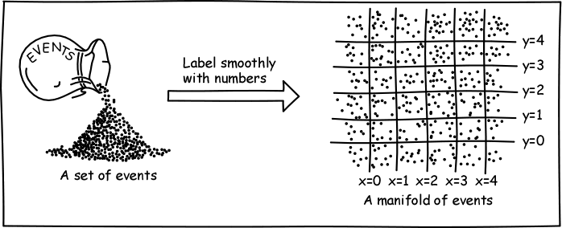

The Hole Argument
What is space? What is time? Do they exist independently of the things and processes in them? Or is their existence parasitic on these things and processes? Are they like a canvas onto which an artist paints; they exist whether or not the artist paints on them? Or are they akin to parenthood; there is no parenthood until there are parents and children? That is, is there no space and time until there are things with spatial properties and processes with temporal durations?
These questions have long been debated and continue to be debated. The hole argument arose when these questions were asked in the context of modern spacetime physics. In that context, space and time are fused into a single entity, spacetime, and we inquire into its status. One view is that spacetime is a substance, a thing that exists independently of the processes occurring within spacetime. This is spacetime substantivalism. The hole argument seeks to show that this viewpoint leads to unpalatable conclusions in a large class of spacetime theories. Spacetime substantivalism requires that we ascribe such a surfeit of properties to spacetime that neither observation nor even the laws of the relevant spacetime theory itself can determine which are the correct ones. Such abundance is neither logically contradictory nor refuted by experience. But there must be some bounds on how rich a repertoire of hidden properties can be ascribed to spacetime. The hole argument urges that spacetime substantivalism goes beyond those bounds.
The hole argument depends upon a gauge freedom in general relativity; that is, the presence of surplus mathematical structure in general relativity that has no correlate in physical reality. The hole argument provides a template for the analysis of gauge freedoms in physical theories. We learn from it that the identification of surplus mathematical structure cannot be achieved by any a priori or purely mathematical rule. Some physical grounds are needed. The hole argument provides two grounds that can be used: verifiability—changes in the candidate surplus structure make no difference to what can be verified in observation; determinism—the laws of the theory are unable to fix the candidate surplus structure.
The hole argument was invented for slightly different purposes by Albert Einstein late in 1913 as part of his quest for the general theory of relativity. It was revived and reformulated in the modern context by John3 = John Earman × John Stachel × John Norton.
See Stachel (2014) for a review that covers the historical aspects of the hole argument and its significance in philosophy and physics. It is written at a technically more advanced level than this article.
- 1. Modern Spacetime Theories: A Beginner’s Guide
- 2. The Freedom of General Covariance
- 3. The Preservation of Invariants
- 4. What Represents Spacetime? Manifold Substantivalism
- 5. The Price of Spacetime Substantivalism
- 6. Unhappy Consequences
- 7. The Hole Argument in Brief
- 8. The History of the Hole Argument
- 9. Responses to the Hole Argument
- 10. Broader Significance of the Hole Argument
- Supplementary Document: Active and Passive Covariance
- Bibliography
- Academic Tools
- Other Internet Resources
- Related Entries
1. Modern Spacetime Theories: A Beginner’s Guide
Virtually all modern spacetime theories are now built in the same way. The theory posits a manifold of events and then assigns further structures to those events to represent the content of spacetime. A standard example is Einstein’s general theory of relativity. As a host for the hole argument, we will pursue one of its best known applications, the expanding universes of modern relativistic cosmology.
This one example illustrates the core content of the hole argument. With only a little further effort, the argument can be made more precise and general. This will be done concurrently in these notes,[1] intended for readers with some background in differential geometry and general relativity.
Here are the two, basic building blocks of modern, relativistic cosmology: a manifold of events and the fields defined on it.
Manifold of Events. Consider our universe, which relativistic cosmologies attempt to model. Its spacetime is the entirety of all space through all time. The events of this spacetime are generalizations of the dimensionless points of ordinary spatial geometry. A geometric point in ordinary spatial geometry is just a particular spot in the space and has no extension. Correspondingly, an event in spacetime is a particular point in a cosmological space at a particular moment of time.
So far, all we have defined is a set of events. To be a four-dimensional manifold, the set of events must be a little bit more organized. In a real spacetime, we have the idea that each event sits in some local neighborhood of events; and this neighborhood sits inside a larger neighborhood of events; and so on. That extra organization comes from the requirement that we can smoothly label the events with four numbers—or at least we can do this for any sufficiently small chunk of the manifold. These labels form coordinate systems. The fact that four numbers are just sufficient to label the events makes the manifold four-dimensional. We can now pick out neighborhoods of some event as the set of all points whose spacetime coordinates differ from our starting event by at most one unit; or two units; or three units; etc.. That gives us the nestling neighborhoods of events. Figure 1 illustrates how a set of events may be made into a two dimensional manifold by assigning “x” and “y” coordinates to the events.

Figure 1. Forming a manifold of events
Metrical Structure and Matter Fields. In specifying that events form a four dimensional manifold, there is still a lot we have not said about the events. We have not specified which events lie in the future and past of which other events, how much time elapses between these events, which events are simultaneous with others so that they can form three dimensional spaces, what spatial distances separates these events and many more related properties.
These additional properties are introduced by specifying the metric field. To see how this field provides that information, imagine all the curves connecting all pairs of events in spacetime. The information about times elapsed and spatial distances is given by the times elapsed and distances along all of these curves. See Figure 2:
Figure 2. The function of the metric field.
That information could be supplied by a huge catalog that specifies the spatial or temporal distance between every pair of events along every curve connecting them. Such a huge catalog would be massively redundant, however. If we know the distance from A to B and from B to C along some curve, then we know the distance from A to C as well. The minimum information we need is the temporal and spatial distance between each event and all those (loosely speaking) infinitesimally close to it. That information is what the metric field provides. It is a “field” since that information belongs just to one event. We can then piece together temporal and spatial distance along any curve just by summing all the distances between successive infinitesimally close points along the curve.
The matter of the universe is represented by matter fields. The simplest form of matter—the big lumps that make galaxies—can be represented by worldlines that trace out the history of each galaxy through time. In standard models, the galaxies recede from one another and this is represented by a spreading apart of the galactic worldlines as we proceed to later times. See Figure 3:
Figure 3. Galaxies in an expanding universe.
2. The Freedom of General Covariance
When Einstein first introduced his general theory of relativity in the 1910s, its novel feature was its general covariance. It was the first spacetime theory in which one was free to use arbitrary spacetime coordinate systems. This feature is now shared by virtually all modern formulations of spacetime theories, including modern versions of special relativity and Newtonian spacetime theory. In its original form, general covariance was understood “passively”; that is, as a freedom to describe structures in spacetime by means of arbitrarily chosen coordinate systems. That freedom proves to be equivalent to another freedom, known as “active” general covariance. According to active general covariance, we are licensed to spread geometrical structures like metrical fields over the manifold in as many different ways as there are coordinate transformations. (For a more extensive account of the relationship between active and passive covariance, see the Supplementary Document: Active and Passive Covariance.)[2]
The exercising of this freedom is the essential manipulation of the hole argument. Figure 4 illustrates one way that we might spread the metrical structure and matter fields over the manifold of spacetime events:
Figure 4. One way to spread metric and matter over the manifold.
Figure 5 illustrates a second way:
Figure 5. Another way to spread metric and matter over the manifold.
We shall call the transformation between the two spreadings a “hole transformation.” The dotted region is The Hole. The first distribution of metric and matter fields is transformed into the second in a way that
- leaves the fields unchanged outside the hole;
- within the hole they are spread differently;
- and the spreadings inside and outside the hole join smoothly.[3]
3. The Preservation of Invariants
3.1 Invariants
The two different spreadings share one vital characteristic upon which the hole argument depends: the two spreadings agree completely on all invariant properties.
These invariant properties are, loosely speaking, the ones that are intrinsic to the geometry and dynamics, such as distance along spatial curves and time along worldlines of galaxies, the rest mass of the galaxy, the number of particles in it, as well as a host of other properties, such as whether the spacetimes are metrically flat or curved.
The invariant properties are distinguished from non-invariant properties. Best known of the non-invariant properties are those dependent on a particular choice of coordinate system. For example, just one event in a two-dimensional Euclidean space lies at the origin of coordinate system, that is, at x=0, y=0. But which event that is, changes when we change our coordinate system. So “being at the origin” is not an invariant. The spatial distance between two points, however, is that same no matter coordinate system is used to describe the space. It is an invariant.
While the fields are spread differently in the two cases, they agree in all invariant properties; so, in invariant terms, they are the same.
This last result actually explains the prevalence of general covariance. The laws of a spacetime theory are typically stated as relations between invariant properties. Therefore if they are satisfied by one spacetime, they must also be satisfied by a transform of that spacetime that shares all the original’s invariant geometric properties.
3.2 Invariants and Observables
There is a special relationship between the invariants of a spacetime theory and its observables, those quantities which are accessible to observational verification:
All observables can be reduced to invariants.
For example, if one makes a journey from one galaxy to another, all observables pertinent to the trip will be invariants. These include the time elapsed along the journey, whether the spaceship is accelerating or not at any time in its journey, the age of the galaxy one leaves at the start of the trip and the age of the destination galaxy at the end and all operations that may involve signaling with particles or light pulses.
Therefore, since the two spreadings or distributions of metric and matter fields of a hole transformation agree on invariants, they also agree on all observables. They are observationally indistinguishable.
4. What Represents Spacetime? Manifold Substantivalism
Recall our original concern: we want to know whether we can conceive of spacetime as a substance, that is, as something that exists independently. To do this, we need to know what in the above structures represents spacetime. One popular answer to that question is that the manifold of events represents spacetime. We shall see shortly that this popular form of the answer is the one that figures in the hole argument. This choice is natural since modern spacetime theories are built up by first positing a manifold of events and then defining further structures on them. So the manifold plays the role of a container just as we expect spacetime does.[4]
One might wonder if this is the right choice, given that it excludes the metric field, which contains important information on spatial distances and times elapsed. Ought that not also to be considered a part of the containing spacetime as opposed to what is contained within spacetime?
General relativity makes it hard to view the metric field simply as part of the containing spacetime. For, in addition to spatial and temporal information, the metric field also represents the gravitational field. Therefore it also carries energy and momentum—the energy and momentum of the gravitational field (although a notorious technical problem in general relativity precludes identifying the energy and momentum density of the gravitational field at any particular event in spacetime). This energy and momentum is freely interchanged with other matter fields in spacetimes. It is the source of the huge quantities of energy released as radiation and heat in stellar collapse, for example. To carry energy and momentum is a natural distinguishing characteristic of matter contained within spacetime. So the metric field of general relativity seems to defy easy characterization. We would like it to be exclusively part of spacetime the container, or exclusively part of matter the contained. Yet it seems to be part of both.
The notion that the manifold represents an independently existing thing is quite natural in the realist view of physical theories. In that view one tries to construe physical theories literally. If formulated as above, a spacetime is a manifold of events with certain fields defined on the manifold. The literal reading is that this manifold is an independently existing structure that bears properties.
5. The Price of Spacetime Substantivalism
So far we have characterized the substantivalist doctrine as the view that spacetime has an existence independent of its contents. This formulation conjures up powerful if vague intuitive pictures, but it is not clear enough for interpretation in the context of physical theories. If we represent spacetime by a manifold of events, how do we characterize the independence of its existence? Is it the counterfactual claim that were there no metric or matter fields, there would still be a manifold of events? That counterfactual is automatically denied by the standard formulation which posits that all spacetimes have at least metrical structure. That seems too cheap a refutation of manifold substantivalism. Surely, there must be an improved formulation. Fortunately, we do not need to wrestle with finding it. For present purposes we need only consider a consequence of the substantivalist view and can set aside the task of giving a precise formulation of the substantivalist view.
In their celebrated debate over space and time, Leibniz taunted the substantivalist Newton’s representative, Clarke, by asking how the world would change if East and West were switched. For Leibniz there would be no change since all spatial relations between bodies would be preserved by such a switch. But the Newtonian substantivalist had to concede that the bodies of the world were now located in different spatial positions, so the two systems were physically distinct.
Correspondingly, when we spread the metric and matter fields differently over a manifold of events, we are now assigning metrical and material properties in different ways to the events of the manifold. For example, imagine that a galaxy passes through some event E in the hole. After the hole transformation, this galaxy might not pass through that event. For the manifold substantivalist, this must be a matter of objective physical fact: either the galaxy passes through E or not. The two distributions represent two physically distinct possibilities.
Figure 6. Does the galaxy pass through event E?
That is, manifold substantivalists must deny an equivalence inspired by Leibniz’ taunt and is thus named after him:[5]
Leibniz Equivalence. If two distributions of fields are related by a smooth transformation, then they represent the same physical systems.
The supplementary document
Visualizing Leibniz Equivalence Through Map Projections
illustrates the essential idea of Leibniz equivalence through an analogy with different map projections of the Earth’s surface.
6. Unhappy Consequences
We can now assemble the pieces above to generate unhappy consequences for the manifold substantivalist. Consider the two distributions of metric and matter fields related by a hole transformation. Since the manifold substantivalist denies Leibniz equivalence, the substantivalist must hold that the two systems represent distinct physical systems. But the properties that distinguish the two are very elusive. They escape both (a) observational verification and (b) the determining power of cosmological theory.
(a) Observational verification. We have already noticed that the two distributions are observationally equivalent. So the substantivalist must insist that it makes a physical difference as to whether the galaxy passes through event E or not. But no observation can tell us if we are in a world in which the galaxy passes through event E or misses event E, for universes with either are observationally equivalent.
It might be a little hard to see from Figure 6 that the two distributions are observationally equivalent. In the first distribution on the left, the middle galaxy moves in what looks like a straight line and stays exactly at the spatial midpoint between the galaxies on either side. In the second distribution on the right, all that seems to be undone. The galaxy looks like it accelerates in taking a swerve to the right, so that it moves closer to the galaxy on its right.
These differences that show up in the portrayal of Figure 6 are all non-invariant differences. For the right hand distribution, the galaxy does veer to the right in the figure, but at the same time, distances between events get stretched as well, just as they get stretched in the various map projections shown in the supplement, Visualizing Leibniz Equivalence Through Map Projections. So the galaxy always remains at the spatial midpoint of the galaxies on either side; it just doesn’t look like it is at the spatial midpoint from the way the figure is drawn.
Similarly, an acceleration vector along the galaxy’s worldline determines whether the galaxy is accelerating. That acceleration vector is an invariant. So, if the galaxy in the left hand distribution has a zero acceleration vector, then the corresponding galaxy in the right hand distribution will also have a zero acceleration vector. Remember, a hole transformation preserves invariants. So if a galaxy is unaccelerated in the left hand distribution, it is also unaccelerated in the right hand distibution.
(b) Determinism. The physical theory of relativistic cosmology is unable to pick between the two cases. This is manifested as an indeterminism of the theory. We can specify the distribution of metric and matter fields throughout the manifold of events, excepting within the region designated as The Hole. Then the theory is unable to tell us how the fields will develop into The Hole. Both the original and the transformed distribution are legitimate extensions of the metric and matter fields outside The Hole into The Hole, since each satisfies all the laws of the theory of relativistic cosmology. The theory has no resources which allow us to insist that one only is admissible.
It is important to see that the unhappy consequence does not consist merely of a failure of determinism. We are all too familiar with such failures and it is certainly not automatic grounds for dismissal of a physical theory. The best known instance of a widely celebrated, indeterministic theory is quantum theory, where, in the standard interpretation, the measurement of a system can lead to an indeterministic collapse onto one of many possible outcomes. Less well known is that it is possible to devise indeterministic systems in classical physics as well. Most examples involves oddities such as bodies materializing at unbounded speed from spatial infinity, so called “space invaders.” (Earman, 1986a, Ch. III; see also determinism: causal) Or they may arise through the interaction of infinitely many bodies in a supertask (Supertasks.) More recently an extremely simple example has emerged in which a single mass sits atop a dome and spontaneously sets itself into motion after an arbitrary time delay and in an arbitrary direction (Norton, 2003, Section 3).
The problem with the failure of determinism in the hole argument is not the fact of failure but the way that it fails. If we deny manifold substantivalism and accept Leibniz equivalence, then the indeterminism induced by a hole transformation is eradicated. While there are uncountably many mathematically distinct developments of the fields into the hole, under Leibniz Equivalence, they are all physically the same. That is, there is a unique development of the physical fields into the hole after all. Thus the indeterminism is a direct product of the substantivalist viewpoint. Similarly, if we accept Leibniz equivalence, then we are no longer troubled that the two distributions cannot be distinguished by any possible observation. They are merely different mathematical descriptions of the same physical reality and so should agree on all observables.
We can load up any physical theory with superfluous, phantom properties that cannot be fixed by observation. If their invisibility to observation is not sufficient warning that these properties are illegitimate, finding that they visit indeterminism onto a theory that is otherwise deterministic in this set-up ought to be warning enough. These properties are invisible to both observation and theory; they should be discarded along with any doctrine that requires their retention.
7. The Hole Argument in Brief
In sum the hole argument amounts to this:[6]
- If one has two distributions of metric and matter fields related by a hole transformation, manifold substantivalists must maintain that the two systems represent two distinct physical systems.
- This physical distinctness transcends both
observation and the determining power of the theory since:
- The two distributions are observationally identical.
- The laws of the theory cannot pick between the two developments of the fields into the hole.
- Therefore the manifold substantivalist advocates an unwarranted bloating of our physical ontology and the doctrine should be discarded.
8. The History of the Hole Argument
8.1 Einstein Falls into the Hole…
The hole argument was created by Albert Einstein late in 1913 as an act of desperation when his quest for his general theory of relativity had encountered what appeared to be insuperable obstacles. Over the previous year, he had been determined to find a gravitation theory that was generally covariant, that is, whose equations were unchanged by arbitrary transformation of the spacetime coordinates. He had even considered essentially the celebrated, generally covariant equations he would settle upon in November 1915 and which now appear in all the text books.
Unfortunately Einstein had been unable to see that these equations were admissible. Newton’s theory of gravitation worked virtually perfectly for weak gravitational fields. So it was essential that Einstein’s theory revert to Newton’s in that case. But try as he might, Einstein could not see that his equations and many variants of them could properly mesh with Newton’s theory. In mid 1913 he published a compromise: a sketch of a relativistic theory of gravitation that was not generally covariant. (For further details of these struggles, see Norton (1984).)
His failure to find an admissible generally covariant theory troubled Einstein greatly. Later in 1913 he sought to transform his failure into a victory of sorts: he thought he could show that no generally covariant theory at all is admissible. Any such theory would violate what he called the Law of Causality—we would now call it determinism. He sought to demonstrate this remarkable claim with the hole argument.
In its original incarnation, Einstein considered a spacetime filled with matter excepting one region, the hole, which was matter free. (So in this original form, the term “hole” makes more sense than in the modern version.) He then asked if a full specification of both metric and matter fields outside the hole would fix the metric field within. Since he had tacitly eschewed Leibniz Equivalence, Einstein thought that the resulting negative answer sufficient to damn all generally covariant theories.
8.2 …and Climbs out Again
Einstein struggled on for two years with his misshapen theory of limited covariance. Late in 1915, as evidence of his errors mounted inexorably, Einstein was driven to near despair and ultimately capitulation. He returned to the search for generally covariant equations with a new urgency, fueled in part by the knowledge that none other than David Hilbert had thrown himself into analysis of his theory. Einstein’s quest came to a happy close in late November 1915 with the completion of his theory in generally covariant form.
For a long time it was thought that Hilbert had beaten Einstein by 5 days to the final theory. New evidence in the form of the proof pages of Hilbert’s paper now suggests he may not have. More important, it shows clearly that Hilbert, like Einstein, at least temporarily believed that the hole argument precluded all generally covariant theories and that the belief survived at least as far as the proof pages of his paper. (See Corry, Renn and Stachel 1997.)
While Einstein had tacitly withdrawn his objections to generally covariant theories, he had not made public where he thought the hole argument failed. This he finally did when he published what John Stachel calls the “point-coincidence argument.” This argument, well known from Einstein’s (1916, p.117) review of his general theory of relativity, amounts to a defense of Leibniz equivalence. He urges that the physical content of a theory is exhausted by the catalog of the spacetime coincidences it licenses. For example, in a theory that treats particles only, the coincidences are the points of intersection of the particle worldlines. These coincidences are preserved by transformations of the fields. Therefore two systems of fields that can be intertransformed have the same physical content; they represent the same physical system.
Over the years, the hole argument was deemed to be a trivial error by an otherwise insightful Einstein. It was John Stachel (1980) who recognized its highly non-trivial character and brought this realization to the modern community of historians and philosophers of physics. (See also Stachel, 1986.) In Earman and Norton (1987), the argument was recast as one that explicitly targets spacetime substantivalism. For further historical discussion, see Howard and Norton (1993), Janssen (1999), Klein (1995) and Norton (1987). A thorough, synoptic treatment in four volumes is Renn (2007).
For an account of the appropriation and misappropriation of Einstein’s point-coincidence argument by the logical empiricists, see Giovanelli (2013).
9. Responses to the Hole Argument
There are at least as many responses to the hole argument as authors who have written on it. One line of thought simply agrees that the hole argument makes acceptance of Leibniz equivalence compelling. It seeks to make more transparent what that acceptance involves by trying to find a single mathematical structure that represents a physical spacetime system rather than the equivalence class of intertransformable structures licensed by Leibniz equivalence. One such attempt involves the notion of a “Leibniz algebra.” (See Earman, 1989, Ch. 9, Sect. 9) It has become unclear that such attempts can succeed. Just as intertransformable fields represent the same physical system, there are distinct but intertransformable Leibniz algebras with the same physical import. If the formalisms of manifolds and of Leibniz algebras are intertranslatable, one would expect the hole argument to reappear in the latter formalism as well under this translation. (See Rynasiewicz, 1992.)
Another approach seeks to explain Leibniz equivalence and demonstrate the compatibility of general relativity with the hole argument through the individuation of spacetime points by means of “Dirac observables” and an associated gauge fixing stipulation (Lusanna and Pauri, 2006).
Einstein’s original hole argument was formulated in the context of general relativity. The hole argument as formulated in Earman and Norton (1987) applies to all local spacetime theories and that includes generally covariant formulations of virtually all known spacetime theories. One view is that this goes too far, that general relativity is distinct from many other spacetime theories in that its spacetime geometry has become dynamical and it is only in such theories that the hole argument should be mounted. (See Earman, 1989, Ch.9, Section 5; Stachel, 1993; Iftime and Stachel, 2006.)
To critics, the hole argument presents a huge target. It consists of a series of assumptions all of which are needed to make good on its conclusion. The argument can be blocked by denying just one of its presumptions. Different authors have sought to sustain denial of virtually every one of them.
Perhaps the most promising of these attacks is one that requires the least modification of the ideas used to mount the hole argument. It is the proposal that spacetime is better represented not by the manifold of events alone but by some richer structure, such as the manifold of events in conjunction with metrical properties. (See, for example, Hoefer, 1996.) What motivates this escape is the idea that the manifold of events lacks properties essential to spacetime. For example, there is no notion of past and future, of time elapsed or of spatial distance in the manifold of events. Thus one might be tempted to identify spacetime with the manifold of events plus some further structure that supplies these spatiotemporal notions. In relativistic cosmologies, that further structure would be the metrical structure. This escape from the hole argument sometimes succeeds and sometimes fails. In certain important special cases, alternative versions of the hole argument can be mounted against the manifold-plus-further-structure substantivalists. (See Norton 1988.)
A slight and very popular variant allows that each event of the manifold represents a physical spacetime event, but which physical event that might be depends on the spreading of metric and matter fields on the manifold. Thus the indeterminism of the hole transformation can be eradicated since the metric and matter properties of an event can be carried with the transformation. (See, for example, Brighouse, 1994.)
More generally, we may well wonder whether the problems faced by spacetime substantivalism is an artifact of the particular formalism described above. Bain (1998, 2003) has explored the effect of a transition to other formalisms.
The simplest challenge notes that Leibniz equivalence is a standard presumption in the modern mathematical physics literature and suggests that even entertaining its denial (as manifold substantivalists must) is some kind of mathematical blunder unworthy of serious attention. While acceptance of Leibniz equivalence is widespread in the physics literature, it is not a logical truth that can only be denied on pain of contradiction. That it embodies non-trivial assumptions whose import must be accepted with sober reflection is indicated by the early acceptance of the hole argument by David Hilbert. (See Section 8.2 above.) If denial of Leibniz equivalence is a blunder so egregious that no competent mathematician would make it, then our standards for competence have become unattainably high, for they must exclude David Hilbert in 1915 at the height of his powers.
The question has been reopened recently by Weatherall (2018). He argues that intertransformable mathematical structures are taken in standard mathematical practice to be the same structure. Thus they should represent the same physical system, precluding denial of Leibniz equivalence. Roberts (2014, Other Internet Resources) has responded that Nature, not mathematical practice, should decide whether two mathematical structures represent the same physical system. Curiel (2018) argues for a similar triviality conclusion as Weatherall but on a different basis: there is no physical correlate to the hole transformation in standard physical practice.
Belot (2018) argues against a single decision univocally in favor or or contrary to Leibniz equivalence. While allowing that hole transformations relate systems that are physically the same, he argues that in some sectors of general relativity, some transformations that preserve the metric may relate physically distinct systems.
Another challenge seeks principled reasons for denying general covariance. One approach tries to establish that a spacetime can be properly represented by at most one of two intertransformable systems of fields on some manifold. So Maudlin (1990) urges that each spacetime event carries its metrical properties essentially, that is, it would not be that very event if (after redistribution of the fields) we tried to assign different metrical properties to it. Teitel (2019) has explored a refined version of this essentialist response but concludes that it fails to improve on standard modal responses to the hole argument. Butterfield (1989) portrays intertransformable systems as different possible worlds and uses counterpart theory to argue that at most one can represent an actual spacetime.
These responses are just a few of a large range of responses of increasing ingenuity and technical depth. In the course of the scrutiny of the argument, virtually all its aspects have been weighed and tested. Is the indeterminism of the hole argument merely an artifact of an ill-chosen definition of determinism? Is the problem merely a trivial variant of the philosophical puzzle of inscrutability of reference? Or are there deep matters of physics at issue? The debate continues over these and further issues. To enter it, the reader is directed to the bibliography below.
10. Broader Significance of the Hole Argument
The hole argument has had a broader significance in the philosophy of science in three ways, pertaining to realism about theoretical entities, to theories of quantum gravity and to the way we should approach gauge freedoms in physical theories.
10.1 A Limit to Scientific Realism
The hole argument has presented a new sort of obstacle to the rise of scientific realism. According to that view, one should read the assertions of our mature theories literally. So, if general relativity describes a manifold of events and a metrical structure, then that is literally what is there in the view of the strict scientific realist. To think otherwise, it is asserted, would be to leave the success of these theories an unexplained miracle. If spacetime does not really have the geometrical structure attributed to it by general relativity, then how can we explain the theory’s success?
Appealing as this view is, the hole argument shows that some limits must be placed on our literal reading of a successful theory. Or at least that persistence in such literal readings comes with a high price. The hole argument shows us that we might want to admit that there is something a little less really there than the literal reading says, lest we be forced to posit physically real properties that transcend both observation and the determining power of our theory.
10.2 The Hole Argument and the Quantization of Gravity
One of the most tenacious problems in modern theoretical physics is the quantization of gravity. While Einstein’s 1915 general theory of relativity produced a revolutionary new way of thinking of gravitation in terms of the curvature of spacetime, it is generally agreed now that it cannot be the final account of gravity. The reason is that it is still a classical theory. It does not treat matter in accord with the quantum theory.
The problem of bringing quantum theory and general relativity together in a single theory remains unsolved. (See Quantum Gravity.) There are many contenders, notably string theory and loop quantum gravity. One of the issues that has been raised is that the hole argument has shown us that no successful theory of quantum gravity can be set against an independent, container spacetime. John Stachel was an early proponent of this outcome of the hole argument. See Stachel 2005 (Other Internet Resources). This issue has often been raised by loop quantum gravity theorists specifically as a criticsm of string theoretic approaches, for string theoretic approaches have such a background spacetime. See Gaul and Rovelli (1999) (Other Internet Resources) and Smolin (2005) (Other Internet Resources).
In a related development, Gryb and Thébault (2016) have argued that the problem of the hole argument and the “problem of time” of quantum gravity are essentially the same, given suitable assumptions. For more, see Problem of Time in the article on quantum gravity.
10.3 The Hole Argument as a Template for Analyzing Gauge Freedoms
The hole argument has played a role in the growing recognition in philosophy of physics of the importance of gauge transformations. The analysis of the hole argument provides philosophers of physics a convenient template when they are trying to decide if something is a gauge freedom or not.
10.3.1 What is a Gauge Freedom?
To see how this works, let us first review what a gauge freedom is. A gauge freedom arises whenever we have mathematically distinct structures in a physical theory that represent the same physical situation. The simplest and best known example occurs in Newtonian gravitation theory. If we have a large mass M like the sun, it exerts an attractive force F on a unit test mass at distance r from the sun of magnitude
F = GM/r2
where G is the universal constant of gravitation. This force is an observable in the sense that a unit test mass at r will be accelerated towards the central mass by this force with acceleration F.
These same facts about gravity can be expressed in terms of a potential field U. The large mass M generates a potential field U at a point r distant from the mass according to
U = −GM/r
The potential field U becomes more negative as r gets smaller. For r= 6, 4, 3, …, U = −2, −3, −4, … where we pick the numerically easy case of GM=12. Since masses move to regions of lower potential, they fall into this negative potential well.
A simple rule lets us determine the force pulling a unit mass into the potential well. That force is just the negative gradient of the potential field, where (loosely speaking) the gradient is the difference between potentials at the point in question and an infinitesimally neighboring point.
For example, compare the point at r=10 and r=10.1. The two potentials are near enough U(10)=−0.1 and U(10.1)=−0.099 and their difference is 0.001. Now compare the point at r=5 with that at r=5.1. The two potentials are near enough U(5)=−0.2 and U(5.1)=−0.196 and their difference is 0.004. So the ratio of the forces is 0.004/0.001 = 4 = 22. That is the ratio expected from the inverse square law, which tells us that the inverse squares of the distances are (10/5)2 = 22.
The important point in all this is that the potential field U = −GM/r is only one of very many potential fields compatible with the inverse square law for forces F = GM/r2. Since the forces F are recovered from the potential field U by comparing the values of U at neighboring points in space, we can add a constant amount—K say—to U everywhere and still get the same forces. When we compare the potential field U at neighboring points, the Ks at each point cancel out.
What will become very important below is that this constant K must be the same everywhere in space only at one instant of time. Its value can change from moment to moment. So at time t=0, we may have K=0; or at t=1 we may have K=27; and so on. To indicate that K may vary with time t but not spatial position, it is written here as K(t).[7]
If we use the freedom to add the constant K(t) to U to transform to the new potential field U′, we arrive at the simplest example of a gauge transformation
U′ = U + K(t) = −GM/r + K(t)
Both fields, U and U′ give the same observable forces. In so far as determining the gravitational forces on bodies is concerned, we can use either U or U′. The choice doesn’t matter. That is taken to signify that the two potential fields U and U′ represent the same reality. The transformation between them is a gauge freedom.
This is the simplest and best known example of a gauge freedom in physics. If we accept Leibniz equivalence, the hole transformation that relates the two metric fields of the hole argument is another example of a gauge transformation. Gauge transformations have long been of importance in particle physics, where they have provided a powerful means of constructing theories of interaction fields.
10.3.2 The Philosophical Problem of Gauge Freedoms
Intertransformable mathematical structures often arise in physical theories. The philosophical problem is to know when two intertransformable structures do in fact represent the same physical situation, so that the transformation is a gauge transformation.
Sometimes it is thought that the mere fact that two mathematical structures are intertransformable is all that is needed for the transformation to be a gauge transformation and for the differences between the two structures to correspond to nothing physical. Since the transformation is invertible, the essential fact is that any property of the first structure will have a correlated property in the second; and any property of the second will have a correlated property in the first. That means that the two structures are, informally speaking, perfect mathematical images of each other and each could stand in for the other in any formal application.
The notion that this transformation must be a gauge transformation fails, however. That the two structures are perfect mathematical mirror images of each other is not sufficient to ensure that they must represent the same physical structures. They certainly may represent the same physical structures, but they also may not. To see this, consider a mathematical, three dimensional Euclidean space used to represent a three dimensional physical space with Euclidean properties. The mathematical space hosts many flat, two dimensional surfaces, each of which can be transformed perfectly into any other. But to say that these transformations are merely gauge transformations is to collapse the three dimensions of the physical space into two dimensions. Each two dimensional surface in the physical space is a perfect copy of every other one; they are not all the same surface. The transformations between them cannot be gauge transformations.
One of the major outcomes of the discussions of the hole argument was this:
The decision as to whether a transformation is a gauge transformation cannot merely be decided by the mathematics; it is a physical issue that must be settled by physical considerations.
Unfortunately that complicates matters. A nice mathematical condition for when something is a gauge freedom would have been a straightforward solution to the problem. The sorts of physical considerations that speak for or against a gauge freedom are more elusive and less decisive. The template of the hole argument provides two indicators that some candidate transformation is a gauge transformation:
A transformation may be a gauge transformation and correspond to no real change in the physical reality represented if
- (observational verification fails) the changes in mathematical structures do not manifest in anything observable; and
- (determinism fails) the laws of the theory are unable to pick between the two structures related by the transformation, even when given expansive initial conditions on which the two agree.
The argument that justifies this criterion is the same as was used in the hole argument; it is just slightly generalized. The presumption is that it is possible to keep adding further mathematical embellishments to the mathematics of a physical theory until we are assuredly adding structures with no physical counterparts. The warning that we have reached this point of physical superfluity is that we can make changes to these mathematical structures that make no difference to what we observe and also outstrip the determining power of the laws of the theory. When those structures become invisible both to our powers of observation and to the theory’s laws, we are being warned that we have gone too far.
These ideas can be carried further. Earman (2003) has generalized this approach and suggests that the constrained Hamiltonian formalism gives principled reason for deciding whether a transformation is a gauge transformation. (For an entry into philosophical problems associated with gauge transformations, see the entry on symmetry and symmetry breaking, especially Section 2.5; and Brading and Castellani (2003).)
10.3.3 An Illustration of a Hole Type Argument in a Field Theory
A hole argument type failure of determinism can often be achieved in field theories, depending, of course, on the specific properties of the field theory. Here’s an example of one within Newtonian gravitation theory.
Let us consider the field surrounding a central mass for which GM=12. We shall use the transformation
U′ = U + K(t) = −GM/r + K(t)
to create a hole type argument that indicates this transformation is merely a gauge transformation.
We start with the field U. It has values U(6)=−2, U(4)=−3, U(3)=−4 U(2)=−6. If we assume that the mass M is at rest in space, then the potential field U will be constant through time. This field is illustrated in Figure 7 below. It shows the space around the central mass at different times t=0, t=1 and t=2. The circles represent points in space with the same value of U. For example, all those points at radius r=6 have U=−2. The constancy of the field in time is represented by the vertical lines that connect points with the same value of U across time. For example, point at r=6 at each time instant have the same potential U=−2.
Figure 7. Gravitational potential field before the transformation.
Let us select the following K(t). It is 0 for all time t except in 0 < t < 2. In that time interval, K(t) grows to a maximum value of K(t)=2 at t=1. Computing the field U′ = U+K(t) for t=1, where K=2, we find values for U′ as follows: U(6)=0, U(4)=−1, U(3)=−2 U(2)=−4. Figure 8 illustrates this new field. The result of the transformation has been to shift regions of a particular value of U′ inwards. For example, at t=0 and t=2, U′=−2 at radial distance r=6. However at t=1, U′ has a different value at r=6; the points with U′=−2 have been shifted inward to radial distance r=3. As before, the vertical lines connect points with the same potential U′. They bend inward to reflect the shift in U′ in the time 0 < t < 2.
Figure 8. Gravitational potential field after the transformation.
What are we to make of these differences between the two fields U and U′? Do they betoken any physical difference in gravitational realities? The template of the hole argument suggests that they do not. For the differences in U and U’ are not expressed in any differences in the observationally verifiable motions of bodies falling in the vicinity of the mass M; the forces in both fields are the same. Moreover the laws of Newtonian gravitation theory do not seem to be able to discern which of the two fields ought to be realized in space. We can fix the field at U=U′ for all space and all times t < 0.5 and t > 1.5. Nonetheless, Newtonian gravitation theory is unable to say which of U and U′ is the appropriate extension of the potential field into the times 0.5 < t < 1.5. Whatever dfferences there are between U and U′ in this region outstrip Newtonian gravitation theory.
In this example, the region in which determinism fails fills all space over some short period of time. What was distinctive and disturbing about the indeterminism of the original hole argument was that the indeterminism was localized to a region of arbitrarily small extent in both space and time. Such failures of determinism can arise in other field theories. After the gauge freedom of Newtonian gravitation theory, the next best known gauge freedom is in classical electrodynamics. In that theory, it is possible to set up a hole argument in which the indeterminism manifests in a region of arbitrarily small extent in both space and time.[8]
Rynasiewicz (2012) has related this gauge freedom to the freedom asserted by the thesis of the conventionality of simultaneity in special relativity. He argues that the relation of distant simultaneity among events is conventional to the same extent as the intertransformable models of the hole argument are physically equivalent.
For more applications of hole type arguments see Iftime (2006) (Other Internet Resources), Healey (1999), Lyre (1999) (Other Internet Resources) and Rickles (2004) (Other Internet Resources), and Rickles (2005).
Supplementary Document: Active and Passive Covariance
Bibliography
- Bain, Jonathan, 1998, Representations of Spacetime: Formalism and Ontological Commitment, Ph.D. Dissertation, Department of History and Philosophy of Science, University of Pittsburgh.
- –––, 2003, “Einstein Algebras and the Hole Argument,” Philosophy of Science, 70: 1073–1085.
- Belot, Gordon, 1995, “Indeterminism and Ontology,” International Studies in the Philosophy of Science, 9: 85–101.
- –––, 1996, Whatever is Never and Nowhere is Not: Space, Time and Ontology in Classical and Quantum Gravity Ph. D. Dissertation, Department of Philosophy, University of Pittsburgh.
- –––, 1996a, “Why General Relativity Does Need an Interpretation,” Philosophy of Science, 63 (Supplement): S80–S88.
- –––, 2018, “Fifty Million Elvis Fans Can’t be Wrong,” Noûs, 52: 946–981.
- Brighouse, Carolyn, 1994, “Spacetime and Holes,” in D. Hull, M. Forbes and R. M. Burian (eds.), PSA 1994, Volume 1, pp. 117–125.
- Butterfield, Jeremy, 1988, “Albert Einstein meets David Lewis,” in A. Fine and J. Leplin (eds.), PSA 1988, Volume 2, pp. 56–64.
- –––, 1989, “The Hole Truth,” British Journal for the Philosophy of Science, 40: 1–28.
- Brading, Katherine and Castellani, Elena (eds.), 2003, Symmetries in Physics:Philosophical Reflections, Cambridge: Cambridge University Press, pp. 334–345.
- Corry, Leo, Renn, Juergen, and Stachel, John, 1997, “Belated Decision in the Hilbert-Einstein Priority Dispute,” Science, 278: 1270–73.
- Curiel, Erik, 2018, “On the Existence of Spacetime Structure,” British Journal for the Philosophy of Science, 69: 447–483.
- Earman, John, 1986, “Why Space is not a Substance (At Least Not to First Degree),” Pacific Philosophical Quarterly, 67: 225–244.
- –––, 1986a, A Primer on Determinism, Dordrecht: Reidel.
- –––, 1989, World Enough and Space-Time: Absolute Versus Relational Theories of Space and Time, Cambridge, MA: MIT Bradford.
- –––, 2003, “Tracking down gauge: an ode to the constrained Hamiltonian formalism”, in K. Brading and E. Castellani (eds.), Symmetries in Physics: Philosophical Reflections, Cambridge: Cambridge University Press, pp. 140–162.
- Earman, John and Norton, John D., 1987, “What Price Spacetime Substantivalism,” British Journal for the Philosophy of Science, 38: 515–525.
- Einstein, Albert, 1916, “The Foundation of the General Theory of Relativity,” in H.A. Lorentz et al., The Principle of Relativity, New York: Dover, 1952, pp. 111–164.
- Giovanelli, Marco, 2013 “Erich Kretschmann as a proto-logical-empiricist: Adventures and misadventures of the point-coincidence argument,” Studies in History and Philosophy of Modern Physics, 44: 115–134.
- Gryb, Sean and Thébault, Karim P. Y., 2016, “Regarding the ‘Hole Argument’ and the ‘Problem of Time’,” Philosophy of Science, 83: 563–584.
- Healey, Richard, 1999, “On the Reality of Gauge Potentials,” Philosophy of Science, 68: 432–55.
- Hoefer, Carl and Cartwright, Nancy, 1993, “Substantivalism and the Hole Argument,” in J. Earman et al. (eds.), Philosophical Problems of the Internal and External Worlds: Essays on the Philosophy of Adolf Gruenbaum, Pittsburgh: University of Pittsburgh Press/Konstanz: Universitaetsverlag Konstanz, pp. 23–43.
- Hoefer, Carl, 1996, “The Metaphysics of Space-Time Substantivalism,” Journal of Philosophy, 93: 5–27.
- Howard, Don and Norton, John D., 1993, “Out of the Labyrinth? Einstein, Hertz and the Goettingen Answer to the Hole Argument,” in John Earman, Michel Janssen, John D. Norton (eds.), The Attraction of Gravitation: New Studies in History of General Relativity Boston: Birkhäuser, pp. 30–62.
- Iftime, Mihaela and Stachel, John, 2006, “The hole argument for covariant theories,” General Relativity and Gravitation, 38: 1241–1252.
- Janssen, Michel, 1999, “Rotation as the Nemesis of Einstein’s ‘Entwurf’ Theory,” in Hubert Goenner et al. (eds.), Einstein Studies: Volume 7. The Expanding Worlds of General Relativity, Boston: Birkhaeuser, pp. 127–157.
- Jammer, Max, 1993, Concepts of Space: The History of Theories of Space in Physics, third enlarged edition, New York: Dover, Chapter 6. “Recent Developments.”
- Klein, Martin J. et al. (eds.), 1995, The Collected Papers of Albert Einstein: Volume 4. The Swiss Years: Writing, 1912–1914, Princeton: Princeton University Press.
- Lusanna, Luca and Pauri, Massimo, 2006 “Explaining Leibniz equivalence as difference of non-inertial appearances: Dis-solution of the Hole Argument and physical individuation of point-events,” Studies in History and Philosophy of Modern Physics, 37: 692–725
- Liu, Chuang, 1996, “Realism and Spacetime: Of Arguments Against Metaphysical Realism and Manifold Realism,” Philosophia Naturalis, 33: 243–63.
- –––, 1996a, “Gauge Invariance, Indeterminism, and Symmetry Breaking,” Philosophy of Science, 63 (Supplement): S71–S80.
- Leeds, Stephen, 1995, “Holes and Determinism: Another Look,” Philosophy of Science, 62: 425–437.
- Macdonald, Alan, 2001, “Einstein’s Hole Argument,” American Journal of Physics, 69: 223–25
- Maudlin, Tim, 1989, “The Essence of Spacetime,” in A. Fine and J. Leplin (eds.), PSA 1988, Volume 2, pp. 82–91.
- –––, 1990, “Substances and Spacetimes: What Aristotle Would have Said to Einstein,” Studies in the History and Philosophy of Science, 21: 531–61.
- Muller, Fred A., 1995, “Fixing a Hole,” Foundations of Physics Letters, 8: 549–562.
- Mundy, Brent, 1992, “Spacetime and Isomorphism,” in D. Hull, M. Forbes and K. Okruhlik (eds.), PSA 1992, Volume 1, pp. 515–527.
- Norton, John D., 1984, “How Einstein found his Field Equations: 1912–1915,” Historical Studies in the Physical Sciences, 14: 253–316; reprinted in Don Howard and John Stachel (eds.), Einstein and the History of General Relativity: Einstein Studies, Volume 1, Boston: Birkhäuser, 1989, pp. 101–159.
- –––, 1987, “Einstein, the Hole Argument and the Reality of Space,” in John Forge (ed.), Measurement, Realism and Objectivity, Dordrecht: Reidel, pp. 153–188 .
- –––, 1988, “The Hole Argument,” in A. Fine and J. Leplin (eds.), PSA 1988, Volume 2, pp. 56–64.
- –––, 1989, “Coordinates and Covariance: Einstein’s view of spacetime and the modern view,” Foundations of Physics, 19: 1215–1263.
- –––, 1992, “The Physical Content of General Covariance” in J. Eisenstaedt and A. Kox (eds.), Studies in the History of General Relativity (Volume 3: Einstein Studies), Boston: Birkhauser, pp. 281–315.
- –––, 1992a, “Philosophy of Space and Time,” in M.H. Salmon et al., Introduction to the Philosophy of Science, Englewood Cliffs, NJ: Prentice-Hall; reprinted Hackett Publishing, pp. 179–231.
- –––, 1993, “General Covariance and the Foundations of General Relativity: Eight Decades of Dispute,” Reports on Progress in Physics, 56: 791–858.
- –––, 2003, “Causation as Folk Science,” Philosophers’ Imprint, 3 (4) [available Online].
- –––, 2003a, “General Covariance, Gauge Theories, and the Kretschmann Objection,” in K. Brading and E. Castellani (eds.), Symmetries in Physics: Philosophical Reflections, Cambridge: Cambridge University Press, pp. 110–123.
- Renn, Juergen, et al. (eds.), 2007, The Genesis of General Relativity: Sources and Interpretations, (Boston Studies in the Philosophy of Science, Volume 250), 4 Volumes, Berlin: Springer.
- Rickles, Dean, 2005, “A New Spin on the Hole Argument,” Studies in History and Philosophy of Modern Physcis, 36: 415–34.
- Rynasiewicz, Robert, 1992, “Rings, Holes and Substantivalism: On the Program of Leibniz Algebras,” Philosophy of Science, 45: 572–89.
- –––, 1994, “The Lessons of the Hole Argument,” British Journal for the Philosophy of Science, 45: 407–436.
- –––, 1996, “Is There a Syntactic Solution to the Hole Problem,” Philosophy of Science, 64 (Proceedings): S55–S62.
- –––, 2012, “Simultaneity, convention, and gauge freedom” Studies in History and Philosophy of Modern Physics, 43: pp.90–94.
- Stachel, John, 1980, “Einstein’s Search for General Covariance,” in Don Howard and John Stachel (eds.), Einstein and the History of General Relativity (Einstein Studies, Volume 1), Boston: Birkhäuser, 1989, pp. 63–100. [This paper was first paper read at the Ninth International Conference on General Relativity and Gravitation, Jena.]
- –––, 2014 “The Hole Argument and Some Physical and Philosophical Implications,” Living Reviews (Relativity), 17(1): available online.
- –––, 1986, “What can a Physicist Learn from the Discovery of General Relativity?,” Proceedings of the Fourth Marcel Grossmann Meeting on Recent Developments in General Relativity, R. Ruffini (ed.), Amsterdam: North-Holland, pp. 1857–62.
- –––, 1993, “The Meaning of General Covariance,” in J. Earman et al. (eds.), Philosophical Problems of the Internal and External Worlds: Essays on the Philosophy of Adolf Gruenbaum, Pittsburgh: University of Pittsburgh Press/Konstanz: Universitaetsverlag Konstanz, pp. 129–160.
- Teller, Paul, 1991, “Substances, Relations and Arguments About the Nature of Spacetime,” The Philosophical Review, 100 (3): 363–97.
- Teitel, Trevor, 2019, “Holes in Spacetime: Some Neglected Essentials,” Journal of Philosophy, forthcoming, preprint available online.
- Weatherall, James O., 2018, “Regarding the ‘Hole Argument’,” British Journal for the Philosophy of Science, 69: 329–350, preprint available online.
- Wilson, Mark, 1993, “There’s a Hole and a Bucket, Dear Leibniz,” in P. A. French, T. E. Uehling and H. K. Wettstein (eds.), Philosophy of Science, Notre Dame: University of Notre Dame Press, pp. 202–241.
Academic Tools
How to cite this entry. Preview the PDF version of this entry at the Friends of the SEP Society. Look up topics and thinkers related to this entry at the Internet Philosophy Ontology Project (InPhO). Enhanced bibliography for this entry at PhilPapers, with links to its database.


Other Internet Resources
Preprints
- Gaul, Marcus and Rovelli, Carlo, 1999, “Loop Quantum Gravity and the Meaning of Diffeomorphism Invariance”. [Preprint at arXiv.org]
- Iftime, Mihaela, 2006, “Gauge and the Hole Argument,” [Preprint at arXiv.org]
- Lyre, Holger, 1999, “Gauges, Holes, and their ‘Connections’,” [Preprint at arXiv.org]
- Rickles, Dean, 2004, “A New Spin on the Hole Argument,” [Preprint at U. Pittsburgh PhiSci Archive]
- Roberts, Bryan, 2014, “Disregarding the ‘Hole Argument’,” [Preprint at U. Pittsburgh PhiSci Archive]
- Smolin, Lee, 2005, “The case for background independence,” [Preprint at arXiv.org]
- Stachel, John, 2005, “Structure, Individuality and Quantum Gravity,” [Preprint at arXiv.org]
Other Resources
Acknowledgments
I am grateful to Erik Curiel, Robert Rynasiewicz and Edward N. Zalta for helpful comments on earlier drafts; and to my subject editor Guido Bacciagaluppi for suggestions for revisions.